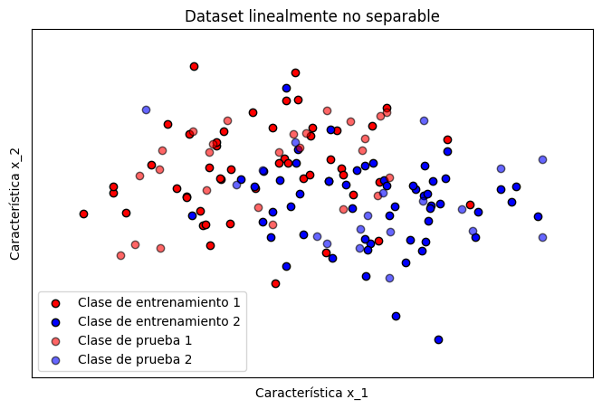
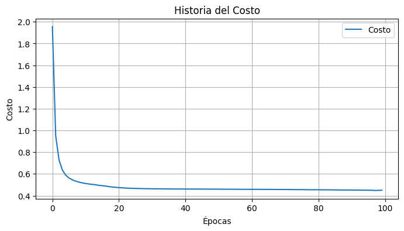
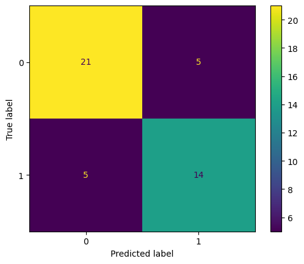
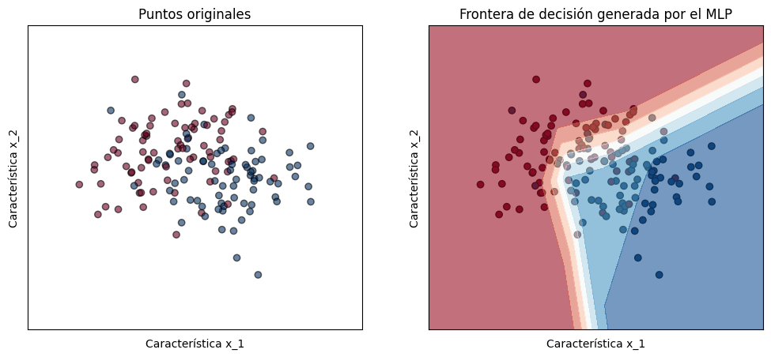

Dimensión pesos capa oculta: (50, 2)
Dimensión biases capa oculta: (50, 1)
Dimensión pesos capa salida: (1, 50)
Dimensión bias capa salida: (1, 1)Implementando un Perceptrón Multi-capa (MLP) desde CERO usando python

Creación dataset sintético

Creación del MLP
Nuestra implementación de un MLP en python tendrá la siguiente estructura:
class PerceptronMulticapa():
def __init__(self, params=None):
pass
def inicializacion(self):
return None
def forward_pass(self):
return None
def backward_pass(self):
return None
def calcular_perdida_entropia_cruzada(self):
return None
def actualizar_pesos(self):
return None
def prediccion(self):
return None
def entrenar(self):
return None
def evaluar(self):
return None1. Inicialización
Asignación de atributos e inicialización de pesos y biases
array([[0.03142919, 0.63641041, 0.31435598, 0.50857069, 0.90756647,
0.24929223, 0.41038292, 0.75555114, 0.22879817, 0.07697991,
0.28975145, 0.16122129, 0.92969765, 0.80812038, 0.63340376,
0.87146059, 0.80367208, 0.18657006, 0.892559 , 0.53934224,
0.80744016, 0.8960913 , 0.31800347, 0.11005192, 0.22793516,
0.42710779, 0.81801477, 0.86073058, 0.00695213, 0.5107473 ,
0.417411 , 0.22210781, 0.11986537, 0.33761517, 0.9429097 ,
0.32320293, 0.51879062, 0.70301896, 0.3636296 , 0.97178208,
0.96244729, 0.2517823 , 0.49724851, 0.30087831, 0.28484049,
0.03688695, 0.60956433, 0.50267902, 0.05147875, 0.27864646]])2. Propagación hacia adelante (forward)
Método de propagación hacia adelante
Dimensión biases capa oculta: (50, 1)
Dimensión de la capa oculta: (50, 1)
Predicción: [[1.]]
Capa oculta: [[0.72633077]
[1.01761811]
[0.99129875]
[0.64226347]
[0.91951467]
[0.58240149]
[1.22554416]
[0.98915428]
[0.88627666]
[1.03760999]
[1.17304912]
[0.95112959]
[0.83016191]
[0.85085938]
[1.20642355]
[1.1577875 ]
[0.60864823]
[1.01505623]
[1.07377182]
[1.06886654]
[0.82949748]
[0.61426555]
[0.80843687]
[0.89119274]
[1.12821114]
[1.03116189]
[0.96713639]
[0.82449353]
[0.94790496]
[0.87459926]
[1.02976633]
[1.1607742 ]
[0.86948377]
[0.70204454]
[0.59561443]
[1.20847428]
[0.64438828]
[0.95081357]
[1.26279179]
[1.08640592]
[1.05700326]
[1.09879949]
[0.97640557]
[0.99963981]
[1.13251031]
[0.73290002]
[1.0450389 ]
[1.0785398 ]
[1.0125701 ]
[0.96240177]]3. Función para calcular el error
Método que permite conocer el error de una predicción con respecto a la etiqueta real.
Error: [[6.67165212e-11]]4. Propagación hacía atrás (backward)
Método para propagar los errores hacía atrás.
Dimensión gradientes capa oculta: (50, 2)
Gradientes capa oculta: [[-8.14789923e-13 9.33629314e-13]
[-1.64987027e-11 1.89050846e-11]
[-8.14956162e-12 9.33819800e-12]
[-1.31845056e-11 1.51075026e-11]
[-2.35283225e-11 2.69599942e-11]
[-6.46280811e-12 7.40542677e-12]
[-1.06390243e-11 1.21907558e-11]
[-1.95873816e-11 2.24442561e-11]
[-5.93150715e-12 6.79663407e-12]
[-1.99567547e-12 2.28675032e-12]
[-7.51169840e-12 8.60730064e-12]
[-4.17960177e-12 4.78920839e-12]
[-2.41020651e-11 2.76174187e-11]
[-2.09502196e-11 2.40058678e-11]
[-1.64207563e-11 1.88157695e-11]
[-2.25922909e-11 2.58874398e-11]
[-2.08348990e-11 2.38737273e-11]
[-4.83675923e-12 5.54221410e-12]
[-2.31392593e-11 2.65141851e-11]
[-1.39822466e-11 1.60215964e-11]
[-2.09325850e-11 2.39856612e-11]
[-2.32308329e-11 2.66191149e-11]
[-8.24412154e-12 9.44654975e-12]
[-2.85305512e-12 3.26918119e-12]
[-5.90913412e-12 6.77099787e-12]
[-1.10726102e-11 1.26875814e-11]
[-2.12067279e-11 2.42997885e-11]
[-2.23141195e-11 2.55686963e-11]
[-1.80231392e-13 2.06518646e-13]
[-1.32409334e-11 1.51721606e-11]
[-1.08212247e-11 1.23995306e-11]
[-5.75806219e-12 6.59789168e-12]
[-3.10746496e-12 3.56069743e-12]
[-8.75254746e-12 1.00291310e-11]
[-2.44445826e-11 2.80098934e-11]
[-8.37891553e-12 9.60100382e-12]
[-1.34494535e-11 1.54110939e-11]
[-1.82255044e-11 2.08837453e-11]
[-9.42696189e-12 1.08019107e-11]
[-2.51930882e-11 2.88675707e-11]
[-2.49510873e-11 2.85902733e-11]
[-6.52736216e-12 7.47939620e-12]
[-1.28909822e-11 1.47711680e-11]
[-7.80015802e-12 8.93783290e-12]
[-7.38438363e-12 8.46141666e-12]
[-9.56280359e-13 1.09575653e-12]
[-1.58027281e-11 1.81076003e-11]
[-1.30317663e-11 1.49324859e-11]
[-1.33456744e-12 1.52921783e-12]
[-7.22380571e-12 8.27741800e-12]]5. Entrenamiento
Método para iterar sobre todo el conjunto de datos y entrenar la red. Antes se deberá generar otro método que haga la respectiva actualización de pesos, una vez ya los gradientes son calculados.
Costo final: [[0.44965122]]
Evaluación
Para evaluar nuestro modelo con la información de test, creamos primero la función de predicción y seguidamente evaluamos el rendimiento en test.
precision recall f1-score support
0 0.81 0.81 0.81 26
1 0.74 0.74 0.74 19
accuracy 0.78 45
macro avg 0.77 0.77 0.77 45
weighted avg 0.78 0.78 0.78 45

7. Interpretabilidad
Gráficamos algunos aspectos de interpretabilidad como la frontera de decisión generada.

Clase python PerceptronMulticapa Completo

Deep Learning · Universidad de Montevideo · Jefferson Rodríguez